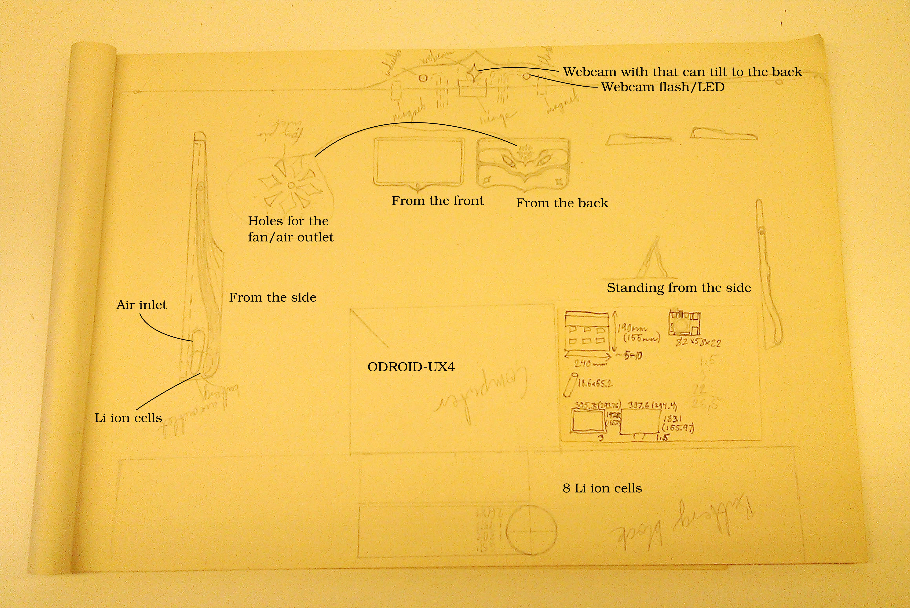

The great Linux tablet is not available yet, so I have decided to build one

I have for many years had a dream about having a Linux tablet without to many software lockins by manufacturers. I think that the best consumer electronics are hardware platforms that allows the user to choose the software. I finally decided to try this out.
I don't know if this will be a success or not, I have some knowledge about electronics, Linux, metal/wood crafting and programming so I thought I would combine all those skills and ask other skilled people I know for help once in a while and just maybe this project will be a success. I also decided to write about it to help me keep track of the journey and share my thoughts.
The vision
Initially I wanted to create an e ink tablet, but since it is still seem extremely hard to find a large display that is plug and play I settled for an LCD display.
The goal of the project is to create a portable tablet running a Linux desktop environment that I can use when surfing, reading, writing or doing some programming as well as a device whose hardware are expendable and upgradeable. While devices like Android tablets allows you to consume content and apps, I want this device to inspire creativity both in the sense that I can create new things with it as I would with a laptop but also inspire me to make modifications to the device itself.
The key features that I'm looking for:
- Multi touch display
- Long battery life
- Fast enough to run Linux desktop environment
- Internet connectivity
- More portable and more than my 15" ThinkPad
- Wooden or at least some kind of more artistic shell (I also like to make/repair musical instruments)
- Possibility to add I/O more hardware sensors as I go (I will add an Arduino inside since the ODROID I/O is only 1.8v)
Inspiration
I like using low power computers like the Sheevaplug and Raspberry Pi for file servers and media players and so on. Now I want to try using one with a full desktop environment for working.
I originally planned using a Raspberry Pi 2 as the computer but I found the ODROID-XU4 which although it draws more power and requires a fan is a lot faster than the Raspberry Pi 2.
Two projects that inspired me a lot are the Raspberry Pi tablet and the Spark tablet. They showed that this is possible. The computers used there are somewhat slower but also use less power consuming computers that does not require to try to create a custom PSU.
Parts
There are a lot of parts needed and I don't know which will work but I decided to order parts that I think will work together and I will try to complete with other parts later if needed.
This is a list of the electronics I plan to use:
- Computer
- ODROID-XU4 8 core 2GB ram, 32GB eMMC for storage
- Display
- 13.3" 1920x1080 LCD
- 13.3" Multi touch screen with USB controller
- LCD controller with HDMI output
- Wireless
- 150 Mbit WiFi USB dongle
- Bluetooth 4.0 USB dongle
- Wireless mouse receiver
- I/O fun
- Arduino
- Power (was unable to find ready to use battery phone charger that could output 6A so decided to try to build a system)
- 8 Li ion cells (I don't know how many I will use yet)
- Li ion charger circuit for 2 serial cells (will use cells in two groups of four so I get 7.4v)
- 7.4v to 5v step down module for the ODROID
- 7.4v to 12v step up module for the LCD display
- Voltage and current sensors connected to the Arduino to see how much charge is left
- External input devices (with solar panels so I don't need to charge those)
- iPad keyboard with Bluetooth and solar panel
- Wireless mouse with solar panel
- Webcam and microphone (will be added later)
Complete parts list so far (as named on eBay and Hardkernel stores)
- ODROID-XU4
- 32GB eMMC 5.0 Module XU3 / XU4 Linux
- Mini USB 150M 150Mbps Wireless LAN Adapter 802.11b/n/g WiFi w/ 2dBi Antenna EC
- 0.3M HDMI Cable V1.4 HD 3D 1080P Connector Gold Plated For PS3 LCD HDTV XBOX
- 30A range Current Sensor Module ACS712 Module Arduino module NEW
- Protection Circuit Module PCM for 2S 7.4V 7.2V Li-ion Li-Po Battery C:10A 2SW007
- LM2587 DC-DC Boost Converter 3-30V Step up to 4-35V Power Supply Module MAX 5A
- N133HSE-EA1 Rev C1 13.3" LED LCD Screen WUXGA FHD IPS Laptop Display Panel Slim
- 1pcs Standard Voltage Sensor Module For Robot Arduino
- Mini USB Nano V3.0 ATmega328P CH340G 5V 16M Micro-controller board For Arduino
- 5A Lithium Charger CV CC buck Step down Power Supply Module LED Driver z3
- HDMI Female to Female Cable Extension Adapter Converter Connector for HDTV DH
- 13.3" Capacitive USB touch screen kit 307*183mm fit B133XW02 LTN133AT17 LP133WH1
- 8pc 18650 UltraFire Li-ion 3.7V 6800mAh Red Rechargeable Battery For Flash Light
- NEW AND HOT HIGH SPEED 4 PORT MINI USB HUB LAPTOP PC
- 5A DC-DC adjustable step-down module XL4015 4~38V 96% NEW GOOD QUALITY M22
- HDMI VGA DVI Audio Controller board 13.3" N133HSE EA1 apply to driver board
- Mini Solar Energy Charging 2.4GHz Optical Wireless Gaming Mouse for Desktop PC
- Solar Powered Wireless Bluetooth Keyboard Stand Case for iPhone iPad2/3 Laptop
- USB 2.0 Mini Wireless Bluetooth V4.0 V3.0 V2.0 Dongle Adapter for PC Laptop PDA